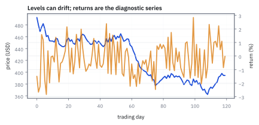
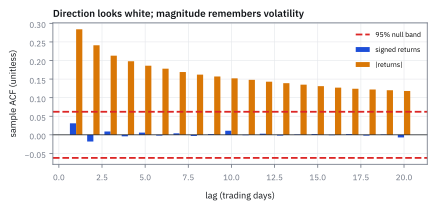
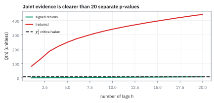
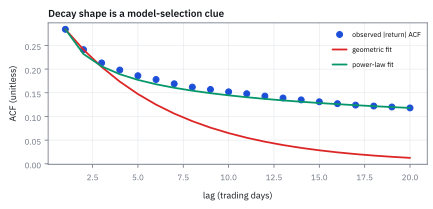

16.1 Stationarity and the Autocorrelation Function
ดูว่าข้อมูลจำอดีตนานเท่าไร และรูปแบบยังคงเดิมหรือไม่
ผลตอบแทน SPY จำนวน 1,000 วันทำการ มี autocorrelation ของทิศทาง lag 1 เพียง +0.031 (t = 0.98) แต่ความผันผวน $|r_t|$ สูงถึง +0.284 สัญญาณนี้ทำกำไรทิศทางได้หรือไม่ และ Ljung–Box Q(3) ได้เท่าใด?
เฉลย: ทำกำไรทิศทางไม่ได้เพราะ R² = 0.096% ไม่พอกินค่าคอมมิชชัน และ Q(3) ได้ 1.37 ยังต่ำกว่าเกณฑ์ 7.815 แต่ความผันผวนได้ Q(3) สูงถึง 184.8 ปฏิเสธขาดลอย บอกว่าความเสี่ยงพยากรณ์ได้จริง
ศัพท์ที่ใช้ในหัวข้อนี้
- time series
- อนุกรมข้อมูลที่เรียงตามเวลา ใช้เรียนรู้การพึ่งพากันระหว่างวันนี้กับอดีตเพื่อพยากรณ์และควบคุมความเสี่ยง
- weak stationarity
- สมบัติที่ค่าเฉลี่ยและ variance คงเดิม และ covariance ขึ้นกับ lag ไม่ใช่วันที่ ใช้ทำให้กฎสถิติที่ประมาณจากอดีตนำไปใช้กับอนาคตได้
- autocorrelation function (ACF)
- correlation ระหว่างอนุกรมกับสำเนาของตัวเองที่เลื่อนไป k ช่วงเวลา ใช้ตรวจว่าความจำเชิงเส้นอยู่ที่ horizon ใด
- volatility clustering
- ช่วงที่ผลตอบแทนขนาดใหญ่ติดกันและช่วงเล็กติดกัน ใช้เป็นหลักฐานว่า variance หรือความผันผวนกำลังสองโดยเฉลี่ยมี dynamics แม้ signed return จะดูไม่มีความจำ
- white noise
- สัญญาณที่มีค่าเฉลี่ยคงที่และไม่มี autocorrelation ที่ lag บวก ใช้เป็น null model ของ residual ที่เหลือหลัง fit
- Ljung–Box test
- การรวม squared ACF หลาย lag เป็นสถิติเดียว ใช้ตรวจ joint hypothesis ว่าไม่มี serial correlation แทนการไล่ดูทีละแท่ง
- moving-average process (MA)
- แบบจำลองที่ใช้ข่าวใหม่หรือ shock ปัจจุบันกับอดีตจำนวนจำกัด ใช้อธิบายผลกระทบที่ค่อย ๆ หมดอายุ
- autoregressive process (AR)
- แบบจำลองที่ใช้ค่าก่อนหน้าของอนุกรมมาช่วยอธิบายค่าปัจจุบัน ใช้วัดว่าความจำของระดับหรือผลตอบแทนสลายเร็วเพียงใด
- generalized autoregressive conditional heteroskedasticity (GARCH)
- variance model ที่ให้ความผันผวนวันนี้ขึ้นกับ shock และความผันผวนในอดีต ใช้จับ volatility clustering
- Heteroskedasticity and Autocorrelation Consistent (HAC)
- standard error ที่ปรับ variance ไม่คงที่และ autocorrelation ใช้ปรับ uncertainty เมื่อ residual มี variance ไม่คงที่หรือพึ่งพากันตามเวลา
สัญลักษณ์ที่ใช้ในหัวข้อนี้
| สัญลักษณ์ | ความหมาย | หน่วย |
|---|---|---|
| $r_t$ | ผลตอบแทน simple return ของ SPY วัน t | decimal return ต่อวัน (เช่น 0.01 = 1%) |
| $x_t=|r_t|$ | ขนาดผลตอบแทน ใช้ดู volatility clustering | decimal return ต่อวัน |
| $n$ | จำนวน observations | วันทำการ |
| $k$ | lag ระยะห่างจากวันปัจจุบัน | วันทำการ |
| $\gamma_k,\rho_k$ | autocovariance และ autocorrelation ที่ lag k | decimal-return-squared และ unitless ตามลำดับ |
| $Q(h)$ | Ljung–Box statistic ถึง lag h | unitless; เทียบกับ chi-squared |
ที่มาที่ไป: ข้อมูลเรียงตามเวลา ต่างจากข้อมูลทั่วไปอย่างไร
เครื่องมือทางสถิติเกือบทั้งหมดในบทก่อน ๆ สมมติว่าข้อมูลแต่ละจุดเป็นอิสระต่อกัน
แต่ข้อมูลที่เรียงตามเวลาไม่เป็นแบบนั้น ค่าวันนี้เกี่ยวกับค่าเมื่อวาน และการเพิกเฉยต่อข้อเท็จจริงนั้น ทำให้ประเมินความมั่นใจสูงเกินจริงเสมอ
George Udny Yule เป็นคนแรก ๆ ที่จัดการเรื่องนี้อย่างเป็นระบบในทศวรรษ 1920 และ George Box กับ Gwilym Jenkins วางกรอบการทำงานที่ใช้กันจนถึงทุกวันนี้ในปี 1970
ขั้นแรกของกรอบนั้นคือการตรวจว่าข้อมูลนิ่งพอหรือยัง เพราะถ้าไม่นิ่ง เครื่องมือที่เหลือทั้งหมดใช้ไม่ได้ ซึ่งเป็นเนื้อหาของหัวข้อนี้
ที่มาของแนวคิด: จาก Spurious Correlation สู่ Stationarity
ในช่วงทศวรรษ 1920 นักสถิติเริ่มนำเครื่องมือของ Pearson ไปวิเคราะห์ข้อมูลเศรษฐกิจและการเงิน เช่น ราคาหุ้น ดัชนีราคาสินค้า หรือปริมาณเงิน แล้วพบความแปลกประหลาดที่ชวนสับสน: ตัวแปรสองตัวที่ไม่มีความเกี่ยวข้องกันในโลกความเป็นจริงเลย เช่น อัตราการแต่งงานในโบสถ์กับอัตราการเกิดอุบัติเหตุ กลับมี sample correlation สูงลิ่วถึง 0.98
George Udny Yule ชี้ให้เห็นในปี 1926 ว่านี่คือภาพลวงตาที่เรียกว่า nonsense correlation หรือ spurious correlation เมื่อตัวแปรทั้งสองมี trend สะสมหรือเดินแบบ random walk ตามกาลเวลา ข้อมูลจะลากค่า correlation ให้สูงขึ้นเองตามธรรมชาติ โดยที่ตัวแปรไม่ได้ส่งอิทธิพลต่อกันแม้แต่น้อย
เพื่อหยุดปัญหานี้ Aleksandr Khinchin จึงได้วางรากฐานของ weak stationarity ขึ้นในปี 1934 โดยตั้งเงื่อนไขพื้นฐานว่า ข้อมูลย้อนหลังจะใช้เป็นตัวแทนของอนาคตได้ ก็ต่อเมื่อกฎทางสถิติไม่เปลี่ยนตามเวลา นั่นคือค่าเฉลี่ยและ variance ต้องคงที่ และ covariance ต้องขึ้นกับระยะห่างของเวลา (lag) เท่านั้น ไม่ใช่ขึ้นกับว่าเราบันทึกข้อมูลในปีใด
ต่อมา Herman Wold (1938) ได้พิสูจน์ Wold Decomposition Theorem ซึ่งบอกว่า time series ใดก็ตามที่เป็น stationary สามารถแยกออกเป็นสองส่วนเสมอ: ส่วนที่เป็น deterministic trend และส่วนผลรวมถ่วงน้ำหนักของ random shock ในอดีต นี่คือจุดกำเนิดที่ทำให้นักเศรษฐศาสตร์เปลี่ยนมาวิเคราะห์ log return แทนระดับราคาดิบ
Worked Example — โจทย์และสิ่งที่ให้มา
โจทย์ให้อะไรมาบ้าง: ราคา SPY เป็นระดับที่มักมี trend และ scale เปลี่ยนไป จึงไม่ใช่ input ที่ปลอดภัยสำหรับ stationary model โดยตรง ใช้ simple return $r_t=P_t/P_{t-1}-1$ หรือ log return $\ell_t=\ln(P_t/P_{t-1})$ แทน ทั้งสองมีหน่วย decimal return; ถ้ารายงานเป็นเปอร์เซ็นต์ให้คูณ 100 เฉพาะตอนแสดงผล อย่าสลับหน่วยกลางสมการ
ขั้นที่ 1 — นิยามของ weak stationarity: สามเงื่อนไขที่ต้องผ่านก่อน
สามก้อนนี้เป็น นิยาม ของคำว่านิ่ง ไม่ใช่ผลที่พิสูจน์ เราเลือกนิยามนี้เพราะมันเป็นข้อกำหนดขั้นต่ำที่ทำให้การเรียนจากอดีตมีความหมาย ข้อแรกกับข้อสองบังคับว่าค่ากลางและความกว้างไม่เลื่อนตามเวลา ข้อสามบังคับว่าความเกี่ยวพันของคู่หนึ่งขึ้นกับระยะห่างเท่านั้น ไม่ขึ้นกับว่าอยู่ช่วงไหน ถ้าสามข้อนี้ไม่จริง การใช้ประวัติช่วงหนึ่งเป็นตัวแทนของช่วงถัดไปก็ไม่มีเหตุผลรองรับ
ค่าเฉลี่ยและ variance ต้องไม่ขึ้นกับ t และ covariance ของคู่ที่ห่างกัน k วันต้องขึ้นกับ k เท่านั้น จึงสามารถใช้ประวัติช่วงหนึ่งเป็นตัวแทนกฎของช่วงถัดไปได้
ขั้นที่ 2 — นิยาม ACF จาก autocovariance
เครื่องมือหลักคือการวัดว่าค่าวันนี้กับค่าเมื่อ k วันก่อนไปด้วยกันแค่ไหน ปรับสเกลให้อยู่ระหว่างลบหนึ่งถึงหนึ่งจะเทียบข้าม lag ได้
$\gamma_k$ มีหน่วย decimal-return-squared แต่ $\rho_k$ ไม่มีหน่วย จึงเปรียบเทียบ lag และสินทรัพย์ได้; estimator ใช้ค่าเฉลี่ย sample และมีคู่ข้อมูลลดลงเมื่อ k สูง
แล้วเอาไปใช้ทำอะไรได้จริงบ้าง
การตรวจว่าข้อมูลนิ่งพอจะใส่แบบจำลองได้หรือยัง เป็นขั้นแรกที่ข้ามไม่ได้
ใช้ตัดสินว่าจะใส่ราคาหรือใส่ผลตอบแทนเข้าแบบจำลอง ซึ่งเป็นการตัดสินใจที่เปลี่ยนผลลัพธ์ทั้งหมด
ใช้ตรวจว่าส่วนที่เหลือจากแบบจำลองยังมีรูปแบบเหลืออยู่หรือไม่ ถ้ามีแปลว่ายังใส่ไม่ครบ
ใช้หาสัญญาณที่มีความจำ เช่นการที่ผลตอบแทนวันนี้เกี่ยวกับเมื่อวาน ซึ่งเป็นฐานของกลยุทธ์ระยะสั้น
Figure 16.1a — ราคาเดิน แต่ผลตอบแทนแกว่งรอบศูนย์

ข้อมูลสังเคราะห์ 120 วันของ SPY ใช้แยกราคาออกจากผลตอบแทนเส้นราคาเป็น random-walk-like path ที่ไม่ควรตีความว่า stationary ส่วนผลตอบแทนมี scale เดียวกันโดยประมาณและเป็น input ของ ACF
เปรียบเทียบความคงที่: ระดับราคาเทียบกับผลตอบแทน
| เงื่อนไข Stationarity | ระดับราคา P_t | ผลตอบแทน r_t |
|---|---|---|
| 1 ค่าเฉลี่ยคงที่ E[X_t] = μ | ไม่ผ่าน (ราคาปี 2018 ไม่เท่าปี 2024) | ผ่าน (แกว่งรอบ 0.03% ต่อวัน) |
| 2. Variance คงที่ Var(X_t) = σ² | ไม่ผ่าน (โตตามเวลา tσ² แบบ random walk) | ผ่าน (คงที่ราว 1% ยกกำลังสอง) |
| 3. Covariance ขึ้นกับ lag k เท่านั้น | ไม่ผ่าน (ขึ้นกับจุดเวลา t ด้วย) | ผ่าน (ขึ้นกับระยะห่าง k เท่านั้น) |
ถ้านำระดับราคาไปหา ACF จะได้ rho_1 ใกล้เคียง 0.999 และลดลงช้ามาก ซึ่งไม่ใช่ความจำที่ทำกำไรได้ แต่เป็นภาพลวงตาที่ทำให้เกิด spurious regression
ขั้นที่ 3 — หกวันนับด้วยมือ: ทิศทางไม่จำ แต่ขนาดจำ
ก่อนข้อมูลพันวัน ลองหกวัน ใช้ตัวเลขเดียวกันสองครั้ง: ครั้งแรกเก็บเครื่องหมาย ครั้งที่สองทิ้งเครื่องหมาย
วันที่ 2 กับ 3 เป็นคู่ (+3, −3): ขึ้นแรงแล้วลงแรง ผลคูณติดลบ ส่วนวันที่ 3 กับ 4 (−3, −2) ลงแล้วลง ผลคูณบวก บวกลบหักกันพอดีเหลือศูนย์ ทิศทางเมื่อวานจึงบอกทิศทางวันนี้ไม่ได้เลย
แต่พอตัดเครื่องหมายทิ้ง วันแรง (3, 3) อยู่ติดกัน วันเบา (1, 1) ก็อยู่ติดกัน ผลคูณของระยะห่างจากค่าเฉลี่ยจึงเป็นบวก ได้ 0.5 นี่คือ volatility clustering ในหกตัวเลข
สูตรในขั้นก่อนคือการนับแบบนี้กับข้อมูลพันวัน: ตัวเศษ (บรรทัด top) คือผลรวมของผลคูณคู่ที่ห่างกัน $k$ วัน ตัวส่วนคือผลรวมกำลังสองของทุกวัน หน่วยตัดกันหมดจึงเป็นตัวเลขระหว่าง −1 ถึง 1
ขั้นที่ 4 — ขอบเขตคร่าว ๆ ใต้ white-noise null
ตัวเลขที่ไม่เป็นศูนย์ไม่ได้แปลว่ามีอะไรจริง ต้องมีเส้นเทียบว่าแค่ไหนถึงเรียกว่าเกินบังเอิญ
ภายใต้ null และเงื่อนไข sample ที่พอเหมาะ ค่า ACF จะกระจายรอบศูนย์; เส้นนี้ไม่ใช่ confidence band ที่ถูกต้องเมื่อมี heteroskedasticity หรือ dependence จริง
มาจากไหน: ถ้าไม่มีความจำจริง ตัวเศษของ $\hat\rho_k$ คือผลรวมของ $n$ ผลคูณที่แต่ละตัวมีค่าเฉลี่ยศูนย์และเป็นอิสระกัน เอาตัวส่วนมาหารแล้วได้ค่าเฉลี่ยที่มี variance ราว $1/n$ (หัวข้อ 14.1) รากคือ $1/\sqrt n$ กับ 1,000 วัน: $1.96/31.62=0.062$
ขั้นที่ 5 — ที่มาของ 1/√n: พิสูจน์ Variance ของ Sample Autocorrelation ใต้ Null
สูตรนี้พิสูจน์ให้เห็นว่าทำไมแถบความเชื่อมั่นของ ACF จึงขึ้นกับ $1/\sqrt{n}$ เสมอ: ตัวแปรที่ไม่มี memory จะมี variance ของ sample correlation เท่ากับส่วนกลับของขนาด sample พอดี โดยไม่ขึ้นกับขนาด variance $\sigma^2$ ของข้อมูลดิบเลย
เมื่อสมมติว่าผลตอบแทนไม่มี memory แต่ละวันเป็นอิสระต่อกัน ผลคูณ $r_t r_{t-k}$ จึงมีค่าเฉลี่ยเป็นศูนย์ และเมื่อคำนวณ variance ของผลคูณ ผลลัพธ์จะกลายเป็น $\sigma^4$ เพราะ variance ของแต่ละวันคูณกันตรง ๆ
ผลคูณของวันต่างคู่กันไม่มีชิ้นส่วนร่วม จึงมี covariance เป็นศูนย์ ทำให้ variance รวมของผลบวก $n$ วันคือ $n\sigma^4$ เมื่อหารด้วยตัวหาร $n^2$ จึงเหลือ $\sigma^4/n$ สำหรับ sample autocovariance
เมื่อนำมาหารด้วย sample variance ซึ่งลู่เข้าหา $\sigma^2$ ตาม law of large numbers (LLN) ตัวคูณ $\sigma^4$ บนและล่างจะตัดกันหมด เหลือเพียง $1/n$ พอดี ถอด square root ได้ standard error เท่ากับ $1/\sqrt{n}$
สำหรับข้อมูล $1{,}000$ วัน จะได้ standard error ราว $0.0316$ คูณ $1.96$ ได้แถบวิกฤต $\pm 0.0620$ ค่า ACF ที่แกว่งอยู่ในกรอบนี้จึงเป็นเพียง random noise จาก sample ไม่ใช่สัญญาณทำกำไร
ตัวเลขโต๊ะ: 1,000 วันและ economic significance
เมื่อ n = 1,000 วัน ขอบเขต 95% คร่าว ๆ คือ ±1.96/√1000 = ±0.062
ที่ lag 1 ค่า autocorrelation ของทิศทางได้ +0.031 (t = 0.98) คิดเป็น R² เพียง 0.096% ของ variance ก่อนหักค่าคอมมิชชัน จึงไม่มี edge เชิง USD สำหรับพอร์ต \$1,000,000
แต่ความผันผวนที่ lag 1 ได้ +0.284 (t = 8.98) คิดเป็น R² ถึง 8.1% สูงกว่าทิศทาง 84 เท่า และที่ lag 20 ขนาดยังคงมี autocorrelation +0.118 (t = 3.73) สูงกว่าขอบเขตอย่างต่อเนื่อง แสดงว่าความเสี่ยงมีความจำยาว
Figure 16.1b — ACF ของ direction กับ magnitude

แถบสีน้ำเงินคือ ACF ของ signed return ที่อยู่ใน band ±0.062; แถบสีส้มคือ ACF ของ magnitude ที่สูงกว่า band ต่อเนื่อง สาระคือ mean predictability และ volatility predictability ต้องวิเคราะห์คนละอนุกรม
ขั้นที่ 6 — นิยามของการทดสอบที่รวมทุก lag พร้อมกัน
บรรทัดนี้เป็น นิยาม ของสถิติที่เราเลือกใช้ ไม่ใช่ผลที่พิสูจน์ที่นี่ เหตุผลของรูปร่างมันอ่านได้: ยกกำลังสองเพื่อไม่ให้บวกกับลบหักกัน และหารด้วยจำนวนคู่ที่เหลือในแต่ละระยะ เพราะระยะไกลมีคู่ให้นับน้อยกว่า การดูทีละ lag แล้วเลือกอันที่ใหญ่ที่สุดคือปัญหาเดียวกับหัวข้อ 14.6 จึงต้องใช้ตัวเลขเดียวที่รวมทุก lag แล้วเทียบกับเกณฑ์เดียว
ตัวหาร $n-k$ ชดเชยจำนวนคู่ที่ลดลงเมื่อ lag สูง และเทียบ $Q(h)$ กับ chi-squared ที่ h degrees of freedom; ใช้ joint test ไม่ใช่เลือกแท่งที่สวยที่สุด
คิดด้วยมือ (signed): $0.031^2/999=9.62\times10^{-7}$, $0.018^2/998=3.25\times10^{-7}$, $0.009^2/997=0.81\times10^{-7}$ รวม $13.68\times10^{-7}$ คูณ $n(n+2)=1{,}002{,}000$ ได้ 1.37
magnitude: $0.284^2/999=8.07\times10^{-5}$, $0.241^2/998=5.82\times10^{-5}$, $0.213^2/997=4.55\times10^{-5}$ รวม $18.44\times10^{-5}$ คูณ 1,002,000 ได้ 184.8 ทำไมเทียบกับ chi-squared 3 องศาอิสระ: เพราะแต่ละ $\sqrt n\,\hat\rho_k$ ใต้ null เป็นระฆังคว่ำมาตรฐานโดยประมาณ ผลรวมกำลังสองของสามตัวจึงเป็น chi-squared (หัวข้อ 7.1)
ขั้นที่ 7 — ที่มาของ Ljung–Box: ปรับ Finite-Sample Variance จาก Box–Pierce
การทดสอบ Ljung–Box ไม่ใช่สูตรที่คิดขึ้นลอย ๆ แต่คือการนำ score ที่ standardize ด้วย finite-sample variance มายกกำลังสองแล้วรวมกัน เมื่อ sample ใหญ่ขึ้น ตัวคูณ $n(n+2)/(n-k)$ จะลู่เข้าสู่ $n$ ตามแบบ Box–Pierce ดั้งเดิม
แบบทดสอบ Box–Pierce (1970) ในบรรทัดแรกรวมกำลังสองของ correlation แต่ละ lag เข้าด้วยกัน ซึ่งผลรวมของตัวแปร normal มาตรฐานยกกำลังสอง $h$ ตัว จะมีการกระจายแบบ chi-squared ที่มี $h$ degrees of freedom
แต่ใน sample ขนาดจำกัด ข้อมูลที่จับคู่กันที่ lag $k$ จะเหลือเพียง $n-k$ คู่ ทำให้ variance แท้จริงของ correlation มีค่าต่ำกว่า $1/n$ เล็กน้อย หากไม่ปรับแก้ ค่าสถิติจะต่ำเกินไปและทำให้เรามองข้าม memory ที่มีอยู่จริง
Ljung และ Box จึงนำ variance ที่แท้จริงมาเป็นตัวหารเพื่อ standardize แต่ละ lag ให้กลับมาเป็น normal มาตรฐานที่มี variance เท่ากับ 1 แล้วจึงรวมกำลังสองอีกครั้ง ตัวคูณ $n(n+2)/(n-k)$ จึงเกิดขึ้นจากเหตุผลนี้
เมื่อแทนค่า $n=1{,}000$ และ correlation สาม lag แรก จะได้ $Q(3)$ ออกมาราว $1.37$ ซึ่งต่ำกว่าค่าวิกฤต $7.815$ ของ chi-squared มาก จึงไม่ปฏิเสธ white noise ข้อมูลไม่มีหลักฐานของ linear autocorrelation ในทิศทาง ซึ่งไม่เหมือนกับการพิสูจน์ว่าไม่มี
คำตอบ — ตรวจสอบความจำของทิศทางและขนาดความผันผวน
คำถาม: ผลตอบแทน SPY จำนวน 1,000 วัน ทิศทางทำกำไรได้หรือไม่ และ Ljung–Box Q(3) ได้เท่าใด?
ของที่มี (ขั้นที่ 1 ถึง 7): ข้อมูล n = 1,000 วัน, ขอบเขตวิกฤต 95% คือ ±1.96/√1000 = ±0.062, ค่าวิกฤต Chi-squared(3) ที่ 95% คือ 7.815
คำตอบ: (1) ทิศทางที่ lag 1 มี autocorrelation +0.031 อธิบาย variance ได้เพียง R² = 0.096% จึงไม่มี edge ทำกำไรหลังหักค่าธรรมเนียม (2) Ljung–Box ของทิศทางได้ Q(3) เท่ากับ 1.37 ไม่ปฏิเสธ white noise (3) ขณะที่ความผันผวนได้ Q(3) สูงถึง 184.8 มากกว่า 7.815 ชัดเจน ปฏิเสธขาดลอย
ตรวจเองใน 10 วินาที: คำนวณ 1.96/√1000 ได้ 0.062 และ 0.031² ได้ 0.00096 หรือ 0.096% ส่วน Q(3) ทิศทาง 1.37 ต่ำกว่า 7.815 ชัดเจน
แปลว่าอะไรบนโต๊ะเทรด: การเก็งทิศทางจาก autocorrelation ระดับวันไม่คุ้มค่าคอมมิชชัน แต่ autocorrelation ของความผันผวนที่สูงต่อเนื่องคือกุญแจสำคัญในการพยากรณ์ความเสี่ยงและตั้ง VaR
Figure 16.1c — Ljung–Box กับค่าวิกฤต

จุดสีเขียวของ signed return อยู่ต่ำกว่าค่าวิกฤต 7.815 ส่วนจุดสีแดงของ magnitude สูงกว่ามาก ภาพนี้ช่วยกันการอ่าน ACF ทีละแท่งแล้วลืม multiple testing
ขั้นที่ 8 — การสลายของความจำ: เรขาคณิตเทียบกับ Power Law
คำนวณอัตราการสลายของ autocorrelation ขนาดความผันผวน เพื่อตรวจว่าความจำของตลาดสลายแบบใด
$\rho^{g}$ คือค่าที่เส้นเรขาคณิตทำนาย $\rho^{p}$ คือค่าที่ power law ทำนาย ส่วนของจริงที่วัดได้คือ 0.213, 0.152 และ 0.118 ที่ lag 3, 10 และ 20
การสลายแบบเรขาคณิตมี $\phi \approx 0.8486$ ที่ lag 10 ทำนาย 0.0648 ต่ำกว่าของจริง 2.3 เท่า พอถึง lag 20 เหลือเพียง 0.0125 ต่ำกว่าของจริง 9.4 เท่า แสดงว่า model ความจำสั้นจะประเมินความเสี่ยงระยะไกลต่ำเกินไป
ขณะที่สูตร power law ให้ $d \approx 0.293$ ค่าทำนายตรงกับข้อมูลจริงเกือบทุกจุด ยืนยันว่าความผันผวนของตลาดการเงินมี long memory ซึ่ง model GARCH ต้องชดเชยด้วย persistence สูงลิ่ว
Figure 16.1d — geometric decay เทียบ power-law

เส้น geometric ที่ fit สอง lag แรกตกต่ำเกินไปเมื่อไปถึง lag 20 แต่ power-law จับ tail ของ ACF magnitude ได้ใกล้กว่า นี่คือ model diagnosis ไม่ใช่ใบอนุญาตให้ extrapolate นอก sample โดยไม่ทดสอบ
กับดักข้อมูลและคำประกาศเกินจริง
ราคา close ของหุ้นสภาพคล่องต่ำอาจ stale ทำให้เกิด positive autocorrelation; bid–ask bounce ทำให้เกิด negative lag-1 autocorrelation และสองผลอาจหักล้างกันพอดี ต้องรู้ว่าใช้ trade price, mid price หรือ adjusted close และจัดการ corporate action ก่อนคำนวณ นอกจากนี้ rho = 0 แปลเพียงไม่พบ linear dependence ไม่ได้แปลว่า independent
ข้อจำกัด: วิธีนี้สมมติอะไร และของจริงเป็นอย่างไร
| เรื่อง | วิธีนี้สมมติว่า | ของจริงเป็นอย่างไร | ผลที่ตามมาเวลาใช้งาน |
|---|---|---|---|
| นิยามที่ใช้ | ตรวจสามเงื่อนไขก็พอ | เงื่อนไขที่ตรวจเป็นแค่ระดับอ่อน | ข้อมูลอาจผ่านการตรวจแต่ยังเปลี่ยนพฤติกรรมในทางที่สำคัญ |
| ความยาวข้อมูล | มีข้อมูลพอจะตรวจ | การเปลี่ยนโครงสร้างช้า ๆ ตรวจไม่พบด้วยข้อมูลสั้น | แบบจำลองที่ผ่านการตรวจอาจพังทันทีเมื่อโครงสร้างเปลี่ยน |
| การทดสอบซ้ำ | ทดสอบครั้งเดียวพอ | การไล่ดูหลาย lag แล้วเลือกอันที่โดดเด่นคือการค้นหาเกินขนาด | ต้องใช้การทดสอบที่รวมทุก lag พร้อมกัน ไม่ใช่เลือกอันที่ชอบ |
แถวล่างเป็นวิธีที่คนหลอกตัวเองบ่อยที่สุดเวลาหาสัญญาณจากอนุกรมเวลา
โค้ดตรวจทุกเลขของตัวอย่าง
import numpy as np
r = np.array([2, 3, -3, -2, 1, -1.0], dtype=float)
def acf1(x):
z = x - x.mean()
return float(z[1:] @ z[:-1] / (z @ z))
assert abs(acf1(r) - 0.0) < 1e-12
assert abs(acf1(abs(r)) - 0.5) < 1e-12
n = 1000
assert abs(1.96 / np.sqrt(n) - 0.0619806) < 1e-6
assert abs(0.031**2 - 0.000961) < 1e-12
# Ljung-Box Q(3)
rho_r = np.array([0.031, -0.018, 0.009])
rho_abs = np.array([0.284, 0.241, 0.213])
k = np.array([1, 2, 3])
q_r = n * (n + 2) * np.sum(rho_r**2 / (n - k))
q_abs = n * (n + 2) * np.sum(rho_abs**2 / (n - k))
assert abs(q_r - 1.3706) < 1e-3
assert abs(q_abs - 184.81) < 0.1
# Decay parameters
phi = 0.241 / 0.284
assert abs(phi - 0.8486) < 1e-3
d = np.log(0.284 / 0.118) / np.log(20)
assert abs(d - 0.293) < 1e-3
โค้ดทดสอบด้วย NumPy ยืนยันการคำนวณ ACF หกวัน แถบขอบเขต สถิติ Ljung–Box Q(3) และอัตราการสลายของความจำ
ก่อนไปต่อ — หัวข้อถัดไป
เมื่อ ACF บอกว่าความจำอยู่ในค่าเฉลี่ยหรือ variance แล้ว ขั้นต่อไปคือตั้งสมการที่สร้างความจำอย่าง explicit: AR จะจำค่าของอนุกรมเอง ส่วน MA จะจำ shock ที่สังเกตไม่ได้ และ GARCH จะจำ conditional variance
สรุปที่ใช้ได้จริง
- ตรวจ weak stationarity ทั้ง 3 เงื่อนไขก่อนใส่ model; ระดับราคามี variance โตตามเวลา จึงต้องใช้ return
- ทิศทาง SPY 1,000 วัน มี $\hat\rho_1 = +0.031$ ($R^2 = 0.096\%$) ไม่สามารถทำกำไรทิศทางได้
- ความผันผวนมี $\hat\rho_1 = +0.284$ และ $Q(3) = 184.8$ ปฏิเสธ white noise ขาดลอย ยืนยัน volatility clustering
- ACF ของความผันผวนสลายแบบ power law ($d \approx 0.293$) ไม่ใช่ geometric ชี้ว่าตลาดมีความจำยาว
- ระวังกับดัก stale price ที่สร้าง autocorrelation บวก และ bid–ask bounce ที่สร้างลบ ซึ่งอาจหักล้างกันจนหลอกตา